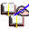

|
Helaman
1 2
3 4
5
6 7
8 9
10
11 12
13 14
15
16
Absurdities
 Plagiarism
Injustice
Intolerance
Cruelty and Violence
Science and History
Prophecy
Language
Good Stuff
SABoM Bookstore
Wikipedia
-Helaman
|
|
|
| Helaman 13
|
| | 13:1 And now it came to pass in the eighty and sixth year, the Nephites did
still remain in wickedness, yea in great wickedness, while the Lamanites did observe strictly to keep the
commandments of God, according to the law of Moses.
|
And it came to pass
13:1, 2(2), 4, 18
| | 13:2 And it came to pass that in this year there was one Samuel, a Lamanite,
came into the land of Zarahemla, and began to preach unto the people. And it came to pass
that he did preach, many days, repentance unto the people, and they did cast him out, and he was about to return
to his own land. |
| | 13:3 But behold, the voice of the Lord came unto him, that he should return again, and prophesy unto
the people whatsoever things should come into his heart. |
| | 13:4 And it came to pass that they would not suffer that he should enter
into the city; therefore he went and got upon the wall thereof, and stretched forth his hand and cried with a
loud voice, and prophesied unto the people whatsoever things the Lord put into his heart. |
| | 13:5 And he said unto them: Behold, I, Samuel, a Lamanite, do speak the words of the Lord which he doth
put into my heart; and behold he hath put it into my heart to say unto this people that the sword of justice hangeth
over this people; and four hundred years pass not away save the sword of justice falleth upon this people. |
| | 13:6 Yea, heavy destruction awaiteth this people, and it surely cometh unto this people, and nothing
can save this people save it be repentance and faith on the Lord Jesus Christ, who surely shall come into the
world, and shall suffer many things and shall be slain for his people. |
| | 13:7 And behold, an angel of the Lord hath declared it unto me, and he did bring glad tidings to my
soul. And behold, I was sent unto you to declare it unto you also, that ye might have glad tidings; but behold
ye would not receive me. |
| | 13:8 Therefore, thus saith the Lord: Because of the hardness of the hearts of the people of the
Nephites, except they repent I will take away my word from them, and I will withdraw my Spirit from them, and
I will suffer them no longer, and I will turn the hearts of their brethren against them. |
| | 13:9 And four hundred years shall not pass away before
I will cause that they shall be smitten; yea, I will visit them with the sword and with famine and
with pestilence.
|
God prophesies that he will kill the Nephites with war, starvation, and disease within the next 400 years or so. (And I guess if you
believe the Book of Mormon, he did with a little help from the Lamanites).
| | 13:10 Yea, I will visit them in my fierce anger, and there shall be those of the fourth generation
who shall live, of your enemies, to behold your utter destruction; and this shall surely come except ye repent,
saith the Lord; and those of the fourth generation shall visit your destruction.
| | 13:11 But if ye will repent and return unto the Lord your God I will turn away mine anger, saith
the Lord; yea, thus saith the Lord, blessed are they who will repent and turn unto me, but wo unto him that
repenteth not. |
| | 13:12 Yea, wo unto this great city of Zarahemla; for behold, it is because of those who are
righteous that it is saved; yea, wo unto this great city, for I perceive, saith the Lord, that there are many,
yea, even the more part of this great city, that will harden their hearts against me, saith the Lord. |
| | 13:13 But blessed are they who will repent, for them will I spare. But behold,
if it were not for the righteous who are in this great city, behold, I would cause that fire should
come down out of heaven and destroy it.
|
If there weren't some "righteous" people in the city, God would have burned everyone to death by sending down fire from heaven.
| | 13:14 But behold, it is for the righteous' sake that it is spared. But behold, the time cometh,
saith the Lord, that when ye shall cast out the righteous from among you, then shall ye be ripe for destruction;
yea, wo be unto this great city, because of the wickedness and abominations which are in her. |
| | 13:15 Yea, and wo be unto the city of Gideon, for the wickedness and abominations which are in her. |
| | 13:16 Yea, and wo be unto all the cities which are in the land round about, which are possessed by
the Nephites, because of the wickedness and abominations which are in them. |
| | 13:17 And behold, a curse shall come upon the land, saith the Lord of Hosts, because of the people's
sake who are upon the land, yea, because of their wickedness and their abominations. |
| | 13:18 And it shall come to pass, saith the Lord of Hosts, yea, our great and
true God, that whoso shall hide up treasures in the earth shall find them again no more, because of the great
curse of the land, save he be a righteous man and shall hide it up unto the Lord. |
| | 13:19 For I will, saith the Lord, that they shall hide up their treasures unto me; and cursed be they
who hide not up their treasures unto me; for none hideth up their treasures unto me save it be the righteous; and
he that hideth not up his treasures unto me, cursed is he, and also the treasure, and none shall redeem it because
of the curse of the land. |
| | 13:20 And the day shall come that they shall hide up their treasures, because they have set their
hearts upon riches; and because they have set their hearts upon their riches, and will hide up their treasures
when they shall flee before their enemies; because they will not hide them up unto me, cursed be they and also
their treasures; and in that day shall they be smitten, saith the Lord. |
| | 13:21 Behold ye, the people of this great city, and hearken unto my words; yea, hearken unto the
words which the Lord saith; for behold, he saith that ye are cursed because of your riches, and also are your
riches cursed because ye have set your hearts upon them, and have not hearkened unto the words of him who gave
them unto you. |
| | 13:22 Ye do not remember the Lord your God in the things with which he hath blessed you, but ye do
always remember your riches, not to thank the Lord your God for them; yea, your hearts are not drawn out unto
the Lord, but they do swell with great pride, unto boasting, and unto great swelling, envyings, strifes, malice,
persecutions and murders, and all manner of iniquities. |
| | 13:23 For this cause hath the Lord God caused that a curse should come upon the land, and also upon
your riches, and this because of your iniquities. |
| | 13:24 Yea, wo unto this people, because of this time which has arrived, that ye do cast out the
prophets, and do mock them, and cast stones at them, and do slay them, and do all manner of iniquity unto
them, even as they did of old time. |
| | 13:25 And now when ye talk, ye say: If our days had been in the days of our fathers of old, we
would not have slain the prophets; we would not have stoned them, and cast them out. |
And say, If we had been in the days of our fathers, we would not have been partakers
with them in the blood of the prophets. -- Mt.23:30
|
| 13:26 Behold ye are worse than they; for as the Lord liveth, if a prophet come among you and
declareth unto you the word of the Lord, which testifieth of your sins and iniquities, ye are angry with him,
and cast him out and seek all manner of ways to destroy him; yea, you will say that he is a false prophet,
and that he is a sinner, and of the devil, because he testifieth that your deeds are evil. |
| | 13:27 But behold, if a man shall come among you and shall say: Do this, and there is no iniquity;
do that and ye shall not suffer; yea, he will say: Walk after the pride of your own hearts; yea, walk after
the pride of your eyes, and do whatsoever your heart desireth -- and if a man shall come among you and say this,
ye will receive him, and say that he is a prophet. |
| | 13:28 Yea, ye will lift him up, and ye will give unto him of your substance; ye will give unto him
of your gold, and of your silver, and ye will clothe him with costly apparel; and because he speaketh flattering
words unto you, and he saith that all is well, then ye will not find fault with him. |
| | 13:29 O ye wicked and ye perverse generation; ye hardened and ye stiffnecked people, how long will
ye suppose that the Lord will suffer you? Yea, how long will ye suffer yourselves to be led by foolish and
blind guides? Yea, how long will ye choose darkness rather than light?
|
"O ye wicked and ye perverse generation..."
... O faithless and perverse generation ... -- Mt.17:17
... ye blind guides ... -- Mt.23:16
... men loved darkness rather than light ... -- Jn.3:19
|
| 13:30 Yea, behold, the anger of the Lord is already kindled against you; behold, he hath cursed
the land because of your iniquity. |
| | 13:31 And behold, the time cometh that he curseth your riches, that they become slippery, that ye
cannot hold them; and in the days of your poverty ye cannot retain them. |
| | 13:32 And in the days of your poverty ye shall cry unto the Lord; and in vain shall ye cry, for your
desolation is already come upon you, and your destruction is made sure; and then shall ye weep and howl in that
day, saith the Lord of Hosts. And then shall ye lament, and say: |
| | 13:33 O that I had repented, and had not killed the prophets, and stoned them, and cast them out.
Yea, in that day ye shall say: O that we had remembered the Lord our God in the day that he gave us our riches,
and then they would not have become slippery that we should lose them; for behold, our riches are gone from us. |
| | 13:34 Behold, we lay a tool here and on the morrow it is gone; and behold, our swords are taken from
us in the day we have sought them for battle. |
| | 13:35 Yea, we have hid up our treasures and they have slipped away from us, because of the curse of
the land. |
| | 13:36 O that we had repented in the day that the word of the Lord came unto us; for
behold the land is cursed, and all things are become slippery, and we cannot hold them. |
| | 13:37 Behold, we are surrounded by demons, yea, we are encircled about by the angels of him who
hath sought to destroy our souls. Behold, our iniquities are great. O Lord, canst thou not turn away thine
anger from us? And this shall be your language in those days.
|
"Behold, we are surrounded by demons."
| | 13:38 But behold, your days of probation are past; ye have procrastinated the day of your salvation
until it is everlastingly too late, and your destruction is made sure; yea, for ye have sought all the days of
your lives for that which ye could not obtain; and ye have sought for happiness in doing iniquity, which thing
is contrary to the nature of that righteousness which is in our great and Eternal Head. |
| | 13:39 O ye people of the land, that ye would hear my words! And I pray that the anger of the Lord be
turned away from you, and that ye would repent and be saved. |
|
|
Previous Chapter | Next Chapter
- The Annotated Book of Mormon
- Helaman 13
|